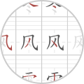
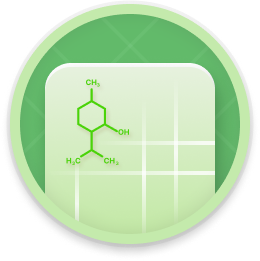
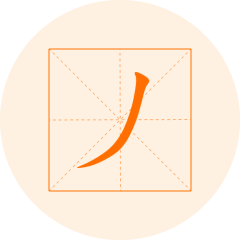

去手写 NEW
去手写是一款专为处理文件中的手写笔迹而设计的在线工具。它能够智能识别并抹除文件中的手写内容，如笔记、标注和答案，从而还原干净的试卷或文档，方便用户重新练习或使用。

字帖生成 推荐
字帖生成是一款在线工具，专为生成个性化字帖而设计。通过这款工具，您可以选择不同的模板、年级，快速生成适合练习书写的字帖。
亲戚关系计算 HOT
亲戚关系计算可以帮助用户快速计算两个或多个对象之间复杂的亲戚关系。亲戚关系计算操作简单易用，只需要打开工具，选择需要计算的亲戚关系，点击“计算”按钮即可得到准确的计算结果。方便用户根据实际情况进行灵活选择和使用。
高校查询
高校查询可以快速找到中国境内知名大学的相关信息， 应用汇聚了全国各地的知名大学，包括清华大学、北京大学、南京大学、浙江大学、复旦大学、上海交通大学等等。能够帮助高考学生和家长们更好的选择学校。
字数计算
字数计算专为快速计算文本中的字数、字符数、单词数和句子数而设计。无论您是需要统计文章的字数、检查字符限制，还是进行文本分析，这款工具都能帮助您高效完成任务。

历史朝代查询
历史朝代查询是一款教育性和实用性兼备的在线工具，专为帮助用户快速查询和了解各个历史朝代的相关信息而设计。通过这款工具，您可以轻松获取各个朝代的起止时间、重要事件、著名人物等信息，帮助您更好地学习和理解历史。

各国首都
各国首都查询是一款实用的在线工具，专为帮助用户快速查询世界各国首都而设计。通过这款工具，您可以轻松获取各个国家的首都信息，帮助您更好地了解世界地理知识，满足学习、工作和旅行等需求。
成语接龙
成语接龙工具可以帮助您进行成语接龙游戏，提升您的汉语词汇量和语言表达能力。通过这款工具，您可以输入一个成语，工具会自动生成下一个接龙成语，帮助您继续游戏，适用于学习、娱乐和语言训练等场景。
便捷思维导图
便捷思维导图工具可以帮助您快速创建、编辑和分享思维导图，提升您的思维整理和信息管理能力。通过这款工具，您可以轻松将想法、计划和知识结构化地呈现出来，适用于学习、工作、项目管理和创意设计等多种场景。
汉字标准发音
汉字标准发音工具可以帮助您学习和掌握汉字的标准发音。通过这款工具，您可以输入任意汉字或词语，工具会自动提供标准的拼音和发音，便于您进行语言学习、发音练习和教学辅助。

元素周期表
元素周期表工具可以帮助您快速查阅和了解化学元素的详细信息，您可以轻松找到每个元素的原子序数、符号、名称、原子量、电子排布等信息，适用于学习、教学和科学研究等场景。
翻译
翻译工具可以帮助您将文本从一种语言翻译成另一种语言。通过这款工具，您可以轻松进行多语言翻译，满足学习、工作、旅行和日常交流等需求。翻译工具支持多种语言，提供准确和快速的翻译服务。

汉字偏旁
汉字偏旁工具可以帮助您查找和学习汉字的偏旁部首。通过这款工具，您可以输入汉字，快速获取该汉字的偏旁部首信息，了解其构造和意义，便于汉字学习和教学。

歇后语
歇后语工具可以帮助您查找和学习各种歇后语。通过这款工具，您可以输入歇后语的前半部分或关键词，快速获取完整的歇后语及其解释，便于语言学习、文化了解和日常交流。
词语注解
词语注解工具可以帮助您查找和学习词语的详细解释和用法。通过这款工具，您可以输入任意词语，快速获取该词语的注解、拼音、词性、例句等信息，便于语言学习、写作和日常交流。
成语大全
成语大全查询是一款免费的中国传统文化知识工具，它收录了上亿个成语能够对成成语首字符快速查询， 成语大全查询是一款用心打造的成语故事查询工具，不仅满足了用户对成语的理解需求和娱乐需求，更成为了他们学习和生活中不可或缺的好帮手